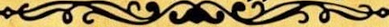

La Gazeta De Appalachia
.png)
Llega el parche de inventario
Este nuevo parche llega a Fallout 76 para ayudar a organizar mejor nuestro inventario entre otras
cosas. A continuacion las novedades mas importantes:
Aumento ael alijo, de 800 a 1200
Nuevas pestañas en el Pip-Boy,ahora armaduras y atuendos estan por separados y comida y bebida estan
separadas de ayuda, lo cual agilizara mucho la busqueda de nuestros objetos. Tamien se incorpora la
pestaña "nuevo" donde entcontrarenos los ultimos items recogidos en la sesion actual ordenados en
el orden en el que se recogen.
Nueva funcion "peso apilado" nos muestra el peso total de un item que tengamos en cantidad (Tip:
atentos con los items de ayuda y comida y bebida, que suelen ser los que mas se acumulan sin darse
cuenta!)
Tambien encontramos mejoras en la interfaz de la vista en mapa de las maquinas vendedoras de jugadores. Ahora apareceran diferentes armas y armaduras por cantidad de estrellas legendarias, lo cual sin duda nos ahorra muchos viajes rapidos.
----------------------------------------------------
Operaciones Diarias
A partir de esta actualizacion al completar una operacion diaria alcanzando el rango de "Maestre" se garantizara la obtencion de al menos un objeto de entre las recompensas poco comunes.
----------------------------------------------------
Conocimiento Prohibido
Novedades Tienda Atomica
En la tienda atomica se ha añadido uam opcion para que muestre solo los items que no hemos comprado, para facilitar la navegacion y mejorar la visualizacion